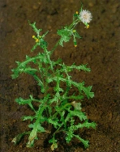

KÖZÖNSÉGES AGGÓFŰ
SENECIO VULGARIS L. (SENVU)
ÉLETFORMA: T1
TERMÉS: A kaszat vékony pálcika vagy orsó alakú, közepe
felett a legvastagabb, töve felé enyhén vékonyodó, csúcsa alatt rövid nyakban
szűkülő, kissé összenyomott. A talpgyűrű enyhén duzzadt, a csúcskorong
csészeformán kiszélesedő, éles szélű gallérral. Szürkésbarna, tíz hosszanti
bordával, ezeket finom fehéres szőrzet borítja. A bordák laposak, a szőrös
bordákkal arányosan fénylő kopasz csíkok váltakoznak. Hossza 1,5-2,0 mm,
szélessége 0,2-0,4 mm. Ezerkaszattömege 0,24 g. Egy nö- vény maghozama 1500 körül
van.
CSÍRANÖVÉNY: Sziklevelei elliptikustól szálas alakúak,
nyélbe keskenyedők, 10 mm hosszúak. Az első lomblevelek fordított tojás alakúak
vagy lándzsásak, öblösen karéjosak vagy szárnyaltan hasogatottak, csúcsuk
háromszögletes, közepén kopasz vagy pelyhesen szőrözött.
KIFEJLETT NÖVÉNY: Egyéves, orsógyökerű, 10-40 cm magas,
szára felálló, ágas. Az egész növény molyhosan szőrözött vagy kopasz. Levelei
zárt állásúak, visszás lándzsásak vagy szálasak, öblösen, szárnyasan
hasogatottak, karéjaik fogasak, alapjuk felé kiszélesedők, kissé húsosak,
élénkzöld színűek. Az alsó levelek nyélre futók, a felsők ülők. Virágzata
fészek, virágszíne sárga.
ELTERJEDÉSE: Őshazája a Földközi-tenger vidéke,
jelenleg világszerte elterjedt. A nedves, tápanyagban gazdag talajokat kedveli.
Nitrogénjelző. Triazinrezisztens biotípusa is ismert.